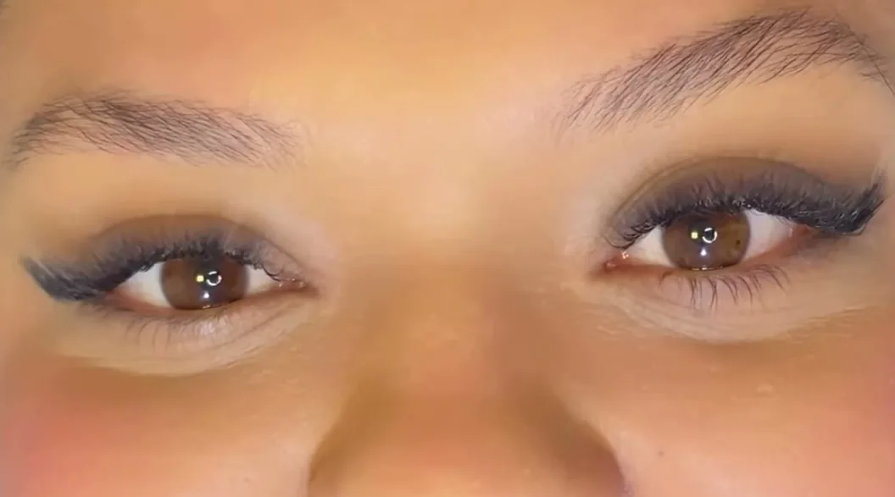
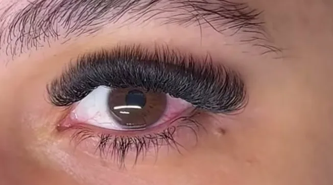
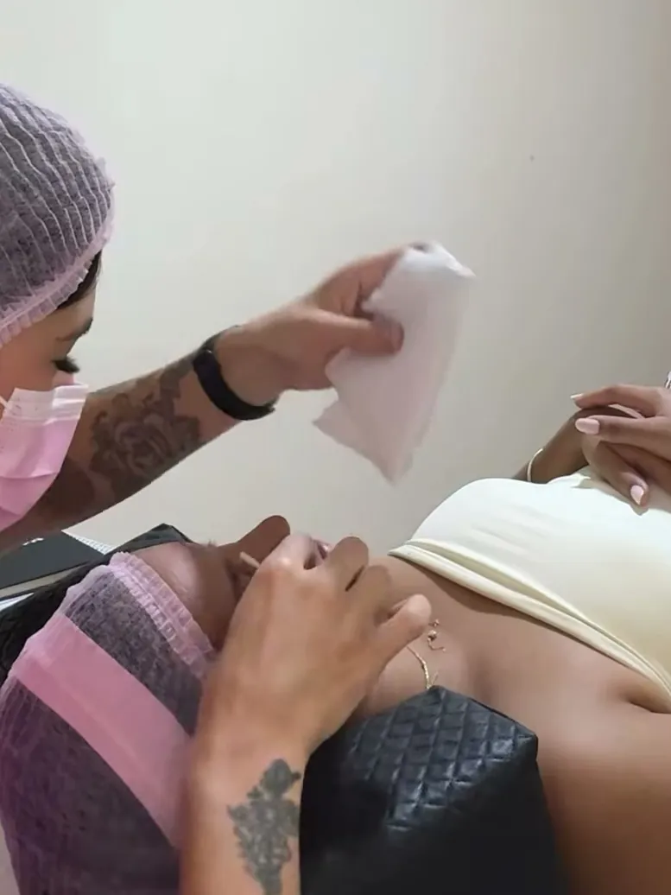
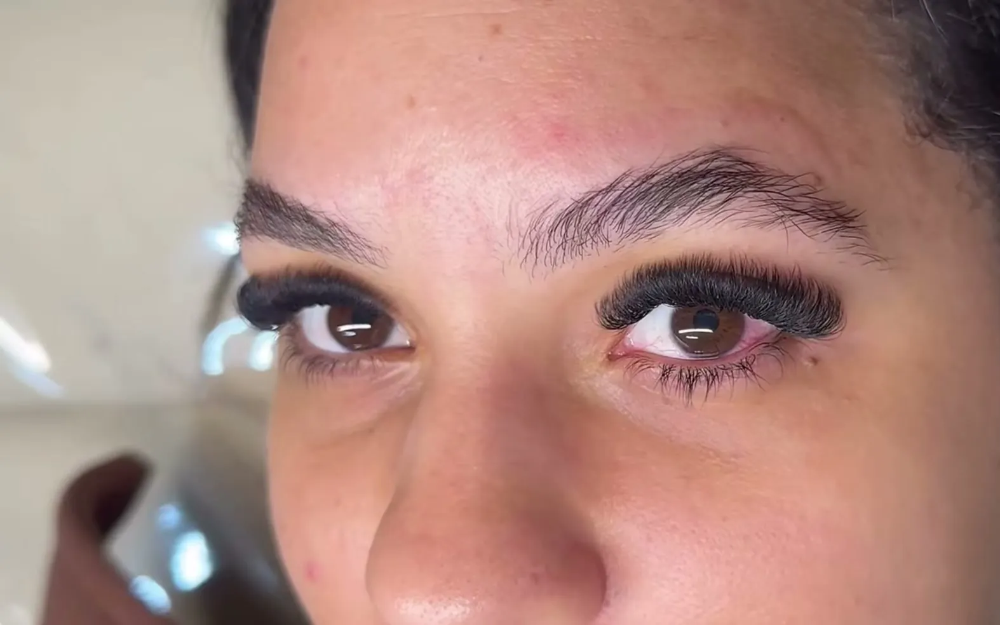

Vitória Bordin, lash designer. Extensão de cílios fio a fio e sobrancelhas em Nova Odessa e Sumaré.
Agendar no WhatsAppBordin
Olhares que ela fez

o olhar puxado


Fotos de clientes reais, tiradas logo depois do atendimento.
Monte seu mapa de cílios
Antes do primeiro fio, a Vitória desenha um mapa no adesivo: um tamanho, em milímetros, para cada parte do olho. Escolha o efeito, o volume e a cor, veja o seu e mande para ela.
Boneca, volume brasileiro, fio preto: mais comprido no meio, para um olhar aberto e redondo.
Mandar esse mapa no WhatsAppMapa de exemplo. O definitivo ela ajusta ao formato do seu olho no dia.
Bordado fio a fio,
uma extensão por cílio

Técnicas
- VolumeBrasileiroFio em Y: preenche sem pesarAgendar →
- VolumeEgípcioFio 5W, cinco pontas: mais marcanteAgendar →
- EfeitoFox eyesAlongado e puxado para cimaAgendar →
- EfeitoBonecaMais comprido no meio, olhar abertoAgendar →
- EfeitoSirenaCresce até o canto de foraAgendar →
- EfeitoRímelPontas marcadas, como máscaraAgendar →
- EfeitoDelineadoBase mais escura, efeito de lápisAgendar →
- CorMarromFio marrom, olhar mais suaveAgendar →
- RostoSobrancelhasDesign alinhado com os cíliosAgendar →
Quem é a Vitória
- OndeNova Odessa e Sumaré, SP
- Usa cíliosdesde 2019
- Agenda(19) 99512-4885
 Vitória Bordin usa cílios desde 2019 e nunca mais ficou sem. Saiu da CLT, tentou uma loja de roupa fitness e, quando não deu certo, fez da paixão a profissão.
Vitória Bordin usa cílios desde 2019 e nunca mais ficou sem. Saiu da CLT, tentou uma loja de roupa fitness e, quando não deu certo, fez da paixão a profissão.
Hoje atende uma cliente por vez, com tempo para mapear cada olho e escolher junto o efeito que combina com você.
Como é o atendimento

Primeiro, o mapa. Vocês conversam sobre o efeito, ela olha o formato do seu olho e escreve no adesivo o tamanho de cada região. Você fica deitada, de olhos fechados, do começo ao fim.
Depois, fio a fio. Com a pinça, ela separa um cílio natural e cola nele uma extensão, um por um, seguindo os números do mapa. Nada encosta na pele.
No fim, o espelho. Você levanta, abre os olhos e vê o resultado. Ela explica os cuidados e já combina a manutenção para o olhar continuar cheio.

Dúvidas
Dói colocar extensão?
Não. A extensão é colada no seu cílio, não na pele, e você fica de olhos fechados. Muita cliente cochila na maca.
Qual técnica combina comigo?
Depende do formato do seu olho e do quanto você quer marcar. Mande uma foto dos olhos pelo WhatsApp e a Vitória indica o efeito e o volume.
Quanto tempo dura?
Os fios caem junto com o seu ciclo natural de cílios. Por isso existe a manutenção, que repõe o que caiu; ela te diz o intervalo certo no fim do atendimento.
Posso molhar e maquiar?
Depois das primeiras horas, pode lavar o rosto normalmente. Evite rímel e demaquilante oleoso nos cílios; ela passa a lista de cuidados no dia.
Onde é o atendimento?
Em Nova Odessa e Sumaré. O endereço e o horário são combinados pelo WhatsApp na hora de agendar.
Como agendo?
Pelo WhatsApp (19) 99512-4885 ou pelo direct do Instagram. Os horários livres da semana saem nos stories.